1. 성적서 자동 수집 · DB화
측정이 끝나면 성적서가 저절로 DB에 쌓이고 대시보드에 보입니다
- 측정 PC 공유 폴더를 1분마다 읽어 측정값을 Parquet DB에 쌓음
- 원본은 읽기만, 임시 사본은 무결성 확인 뒤 바로 삭제
- PC-DMIS 엑셀 · 뉴로메저 성적서 형식 해석, 260자 넘는 긴 경로 처리
- 측정 데이터 대시보드: 측정기별 성적서 수, 기간별 NG율, 아이템별 성적서와 도면·3D 연결
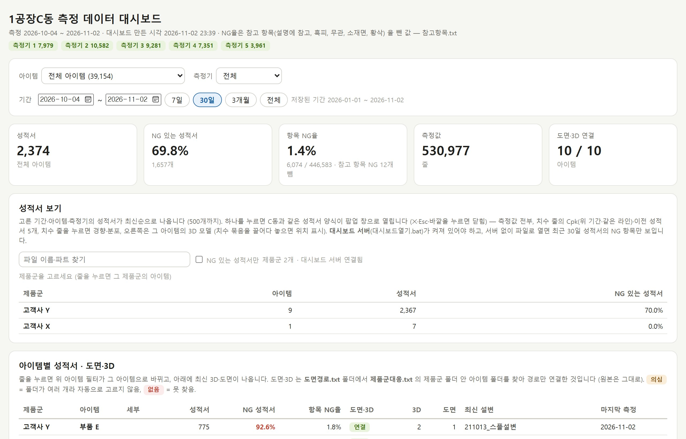
측정실이 손으로 하던 성적서 저장 · 정리 · 점검을 자동으로 바꿨습니다 · 2026-10-17 ~ 2026-11-05
핵심 요약

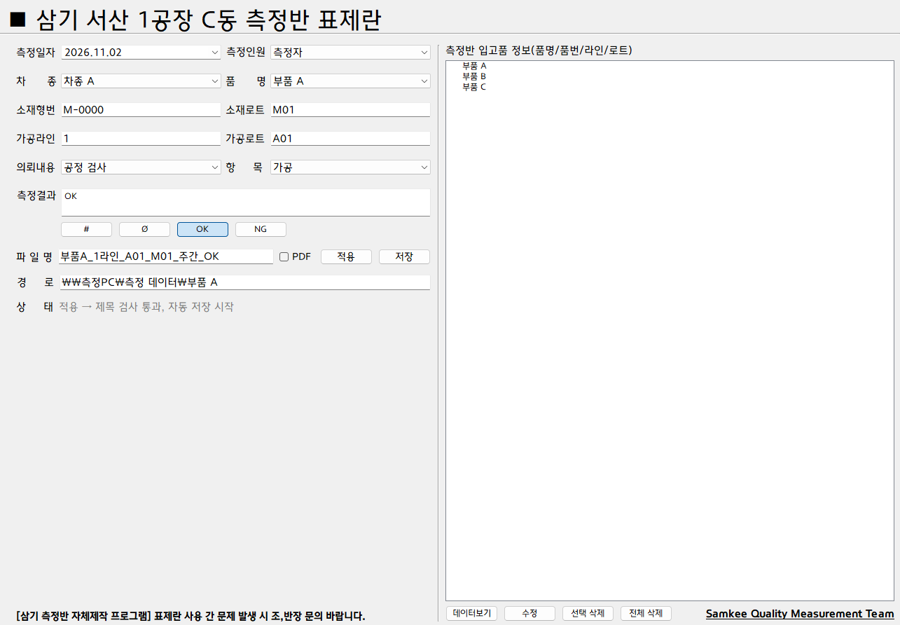
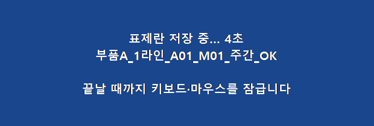
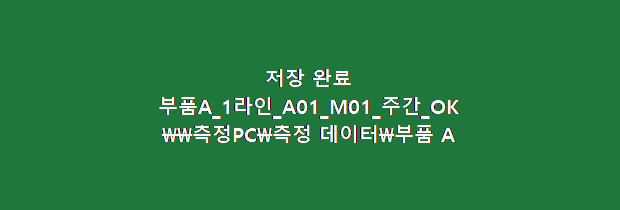
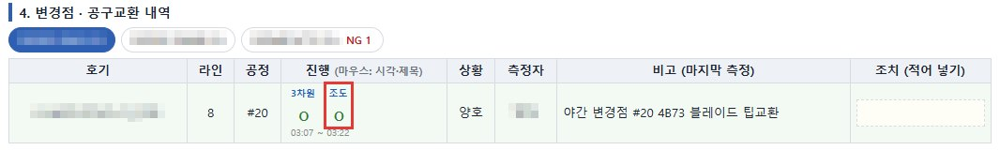
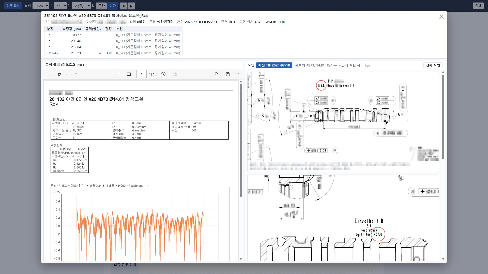
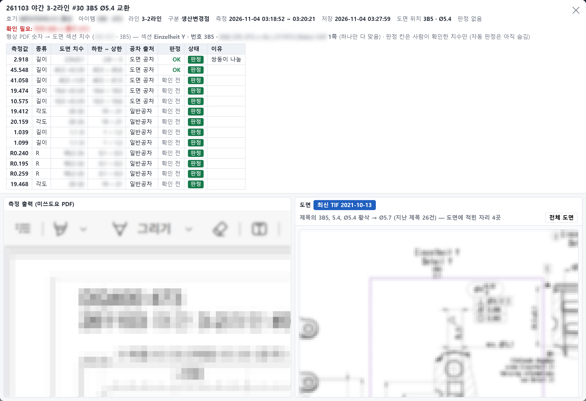
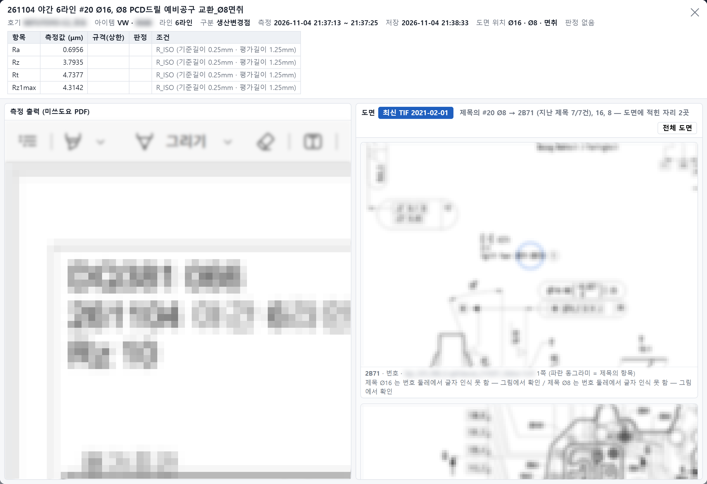
PC-DMIS 원본 프로그램 읽기 전용 유지, 뉴로메저 자동 저장은 측정 뒤 원본으로 되돌림, 규칙 밖 손 저장 성적서 격리.
형상·조도 측정기 파일을 모아 CMM 데이터와 연결, 원시 곡선에서 Rz 직접 계산.
성적서 양식 화면, 치수별 경향·분포·Cpk, 측정 프로그램을 해석해 3D 모델 위에 측정 위치와 편차 방향 표시.
제목의 판정과 측정값의 공차 초과를 대조.
측정 시작·끝을 실시간으로 받아 가동률 계산, 근무별 업무일지 자동 작성, 변경점 진행 묶어 보기.
변경점 성적서·형상·조도 자료를 자동으로 모아 건별 폴더로 정리.
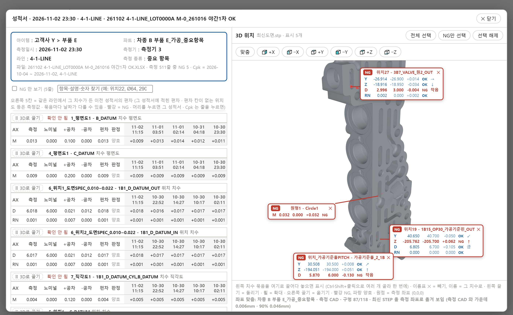
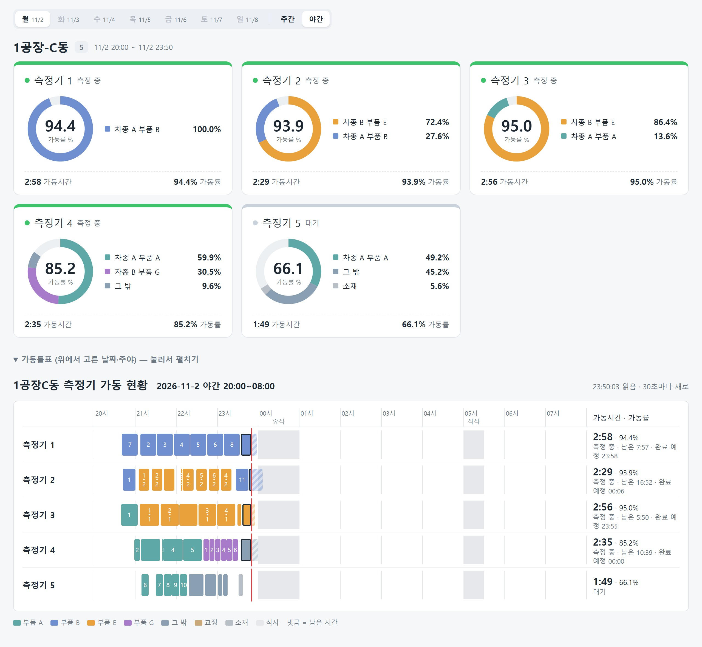
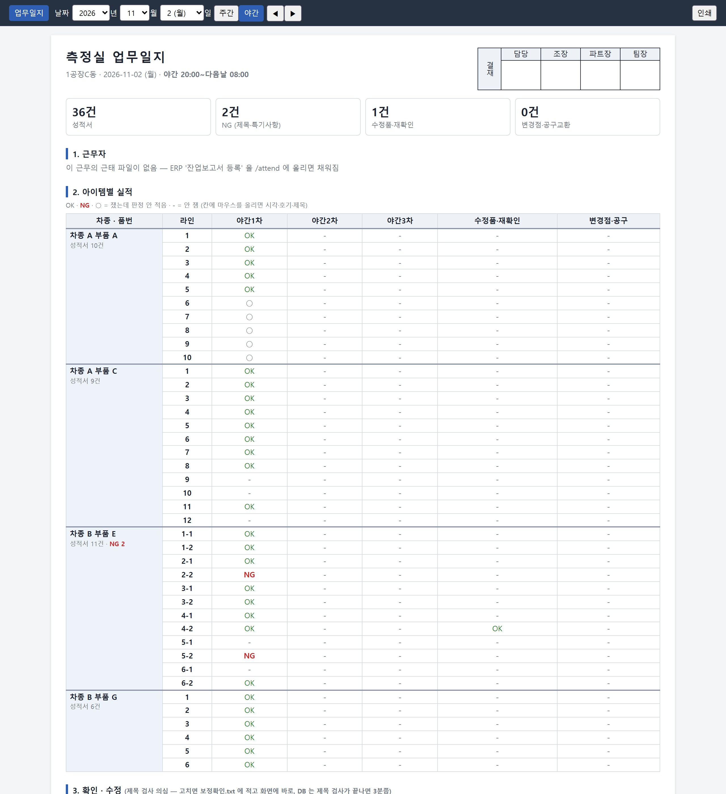
측정 데이터를 망가뜨리지 않고, 사람 손 없이 계속 돌아가게 만들었습니다.